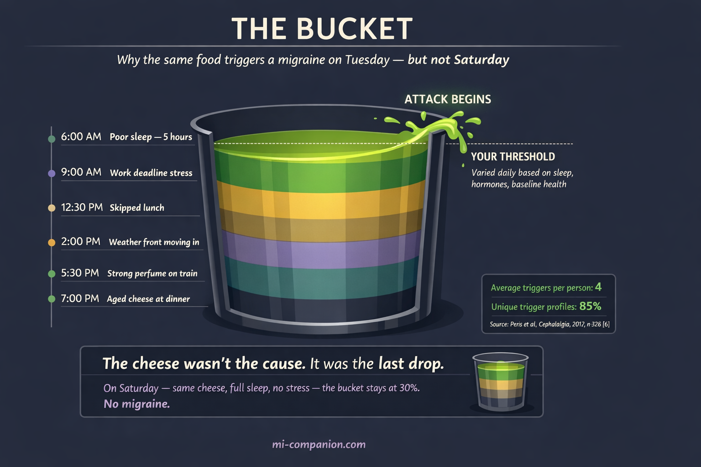
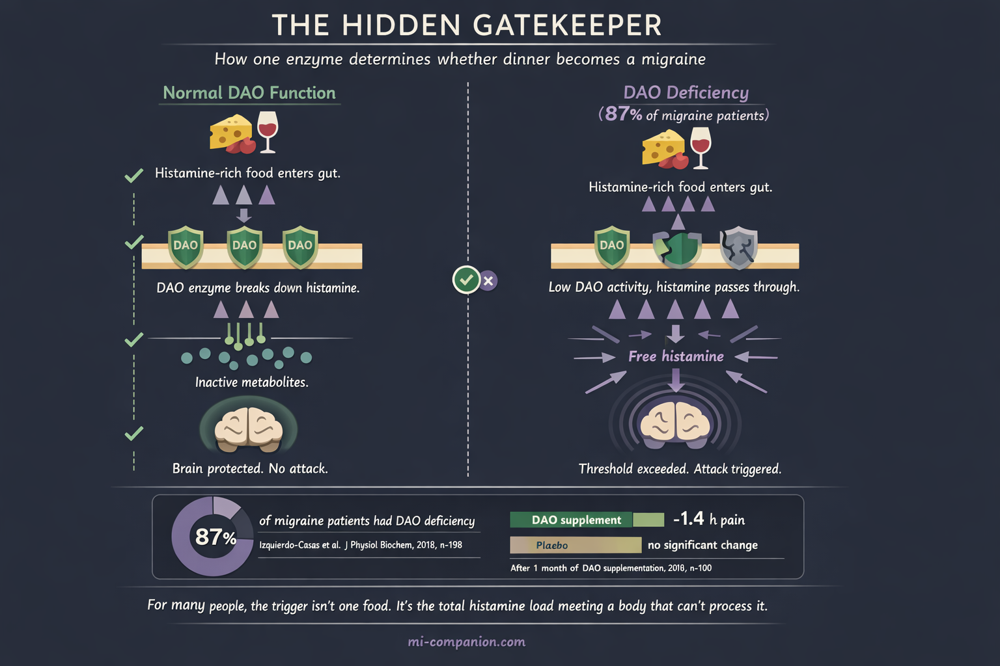

By Rustam Iuldashov
30 years lived experience with chronic migraine | Sources: 22 peer-reviewed references including BMJ (n=182), Cephalalgia (n=326), Clinical Nutrition (n=100), J Physiol Biochem (n=198) | Last updated: March 7, 2026
Medical Review: This content is based on peer-reviewed research from BMJ, Cephalalgia, Nutrients, Clinical Nutrition, Journal of Physiology and Biochemistry, Headache, and Brain and Behavior.
Important Notice: This article is for informational purposes only and does not replace professional medical advice. The author is not a licensed physician or healthcare professional. Always consult your doctor before starting any elimination diet.
Key Takeaways
- Most “trigger lists” online are built on patient recall, not controlled experiments — when researchers double-blind-test the accused foods, the verdicts are shocking[1, 2]
- Your trigger profile is almost certainly unique — a 90-day diary study of 326 patients found 85% had a one-of-a-kind pattern, with only 4 real triggers on average[6]
- Chocolate is probably innocent — in double-blind trials, it performed no differently than a placebo[2, 3]
- 87% of migraine patients have DAO enzyme deficiency — meaning their bodies can’t properly break down histamine from food[9]
- A high omega-3 / low omega-6 diet reduced migraine by 4 days per month in a landmark BMJ trial[14]
- The real question isn’t “what food caused this?” — it’s “how full was my bucket today?”
⚠️ When to Seek Emergency Help
If you experience a sudden, severe headache unlike any you’ve had before — especially with fever, stiff neck, confusion, vision changes, or loss of consciousness — call emergency services immediately. This could indicate a condition requiring urgent medical attention.
Do not use this article to self-diagnose. An elimination diet should be guided by a physician or registered dietitian.
I stopped eating Parmesan in 2004. Dark chocolate — gone by 2007. Red wine I treated like a loaded weapon for a decade.
None of it mattered. Twelve to fifteen attacks a month, year after year.
After 30 years of living inside a migraine brain, I’ve learned something no food list ever taught me: the problem was never the food. It was the method. I was guessing when I should have been investigating.
This article is about how to stop guessing.
The List Everyone Follows — and Nobody Tested
Every migraine website publishes the same roster of villains. Chocolate. Aged cheese. Red wine. Citrus. MSG. The instructions are simple: avoid them all, feel better.
There’s one problem. Almost nobody checked whether the list is true.
Researchers at the University of Vienna sat down with 120 headache patients and asked two separate questions: What do you know triggers migraines? and What have you personally experienced as a trigger?
The gap between knowledge and experience was staggering. 61.7% “knew” chocolate was a migraine trigger. Only 14.3% had actually experienced it as one. For cheese, the numbers were even more dramatic: 52.5% versus 8.4%.[1]
Read those numbers again. For every ten people avoiding cheese, nine are restricting their diet for nothing.
The Chocolate Verdict
Let’s stay with chocolate, because this story has a twist worthy of a courtroom drama.
A 2020 systematic review in the journal Nutrients examined 25 studies on the chocolate–migraine connection.[2] Three of them were double-blind — the gold standard. Patients ate real chocolate or carob, a taste-alike placebo. They couldn’t tell the difference. Neither could the researchers running the trial.
The verdict: chocolate was no more likely to trigger a migraine than the placebo.[3]
Sixty-three women. Chronic headaches. Some of them walked in convinced chocolate was their enemy. It didn’t matter. Chocolate and carob produced identical results. The belief made no difference either — whether a patient blamed chocolate or not, the outcome stayed the same.[3]
So why has chocolate spent decades on the Most Wanted list?
One word: prodrome.
A migraine attack doesn’t begin with pain. It begins 2 to 48 hours earlier, in a phase most patients don’t even recognize. The brain is already shifting — and one of the most common prodromal symptoms is a craving for sweet, carb-heavy food.[4] You crave chocolate. You eat it. Six hours later, the hammer falls.
You blame the chocolate. But the migraine was already in motion before you opened the wrapper.
The American Migraine Foundation states it plainly: the craving for chocolate might be a signal that an attack has already started — not the cause of one.[5]
Your Fingerprint
Now here’s where the science gets personal.
In 2017, a team of researchers abandoned the standard method — asking patients what they think triggers their attacks — and tried something radical. They gave 326 migraine patients electronic diaries and tracked 33 potential trigger factors for 90 consecutive days. Then they built individual statistical models. Not population averages. Individual profiles.[6]
Three findings changed how I think about food and migraine:
One. The average patient had only 4 real triggers statistically linked to their attacks. Not fifteen. Not ten. Four. Out of thirty-three tracked factors.
Two. 85% of patients had a completely unique trigger profile. No two people matched.
Three. Many factors patients suspected? No statistical association. And some patients had genuine triggers they’d never noticed — subtle, invisible, hiding in plain sight.[6]
This is why The List fails. Your migraine brain is as individual as a fingerprint. Copy someone else’s avoidance strategy, and you’re wearing someone else’s prescription glasses.
The Bucket
Here’s the question that haunted me for twenty years: Why does the same food cause a migraine on Tuesday but not Saturday?
Modern neuroscience answers this with what researchers call threshold theory — and patients call “the bucket.”[7]
Picture your nervous system as a container. Every stressor — bad sleep, a deadline, hormonal shift, dehydration, bright lights, weather change, a slice of brie — adds water. One stressor alone rarely overflows the bucket. But stack enough of them, and the system tips.[8]
This is why aged cheese is harmless on a relaxed Saturday after eight hours of sleep. And devastating on a Wednesday when you slept five hours, skipped lunch, and a storm front is rolling in.
The cheese wasn’t the cause. It was the last drop in an already full bucket.
This concept — trigger stacking — rewrites the rules. You’re not hunting for one villain. You’re measuring how much water is already in the container before you add anything.[8]

The Enzyme You’ve Never Heard Of
Every article about food triggers mentions tyramine. Here’s a chemical that deserves far more attention: histamine.
Histamine hides in aged cheese, wine, fermented foods, cured meats, spinach, tomatoes, even chocolate. Your body also produces it naturally during digestion. Normally, an enzyme called diamine oxidase (DAO) breaks it down before it causes problems.
Now, a number you won’t forget.
A clinical study of 198 people measured DAO activity in migraine patients versus healthy controls. Among migraine patients, 87% were DAO-deficient — their bodies couldn’t properly degrade dietary histamine. In the control group, that number was 44%.[9]
Eighty-seven percent.
A follow-up double-blind RCT gave 100 DAO-deficient migraine patients either DAO enzyme supplements or a placebo for one month. The DAO group experienced attacks that were 1.4 hours shorter — a statistically significant reduction. The placebo group saw no meaningful change.[10]
For many people, the real trigger isn’t a single food. It’s the total histamine load colliding with a body that can’t process it fast enough. One piece of aged cheese? Fine. Aged cheese plus a glass of wine plus fermented pickles plus tomato sauce on the same evening? That’s a histamine avalanche in a DAO-deficient system.

The Tyramine Question Mark
Tyramine has been the default explanation for food-triggered migraine since 1967. But the evidence, under scrutiny, wobbles.
One of the largest ongoing individual-level analyses of migraine data found something counterintuitive: tyramine appeared as a “protector” — associated with lower attack risk — in about 10% of patients, and as a trigger in only about 7%.[11]
The timeline is suspicious, too. Tyramine headaches were supposed to strike within 30 minutes of eating the offending food. Most patients report food-triggered migraines hours or a full day later — a pattern that fits the prodrome model far better than direct chemical provocation.[11]
Tyramine isn’t irrelevant for everyone. But for many, strict avoidance of all “tyramine foods” may mean sacrificing foods that were never the problem.
The Protocol: Becoming Your Own Detective
Theory is over. Here’s the method.
Phase 1 — The Baseline (Weeks 1–2)
Change nothing. Eat normally. Track everything. What you ate, when, how you slept, your stress level, the weather, your cycle (if relevant), and every migraine — including its exact timing, intensity, and length.
This isn’t about finding triggers yet. It’s about mapping your normal. Research suggests a practical threshold: a food qualifies as a suspect trigger if migraine follows within 24 hours in at least 50% of exposures.[12]
Phase 2 — The Elimination (Weeks 3–14)
Pick one food group based on your diary data — not from The List. If your diary reveals no clear pattern, start with the most chemically active category: high-histamine foods (aged cheese, wine, fermented products, cured meats, smoked fish).[13]
Remove that single group for a minimum of 4 weeks. Some guidelines recommend 12 weeks for reliable data.[13] Keep tracking.
One rule is non-negotiable: eliminate only one group at a time. Remove five foods at once and your migraines improve? You’ve learned nothing. You don’t know which one mattered.
Phase 3 — The Rechallenge
Most people skip this step. It’s the most important one.
Reintroduce the eliminated food on a day when your bucket is as empty as possible: good sleep, low stress, well hydrated, no other known triggers active.
Eat a normal serving. Wait 48 hours. Record everything.
Repeat the challenge 2–3 times over the next week. A single reaction proves nothing — remember threshold theory. You need reproducibility.
Two out of three challenges trigger an attack? You’ve found a genuine culprit. Zero or one? The food is likely innocent — or only dangerous when your bucket is already full.
Phase 4 — Your Personal Map
After testing your suspects, you’ll own something no website can give you: your evidence-based trigger profile.
Remember: the average person has about 4 real triggers.[6] Some won’t be foods at all — they’ll be disrupted sleep, accumulated stress, weather shifts, or hormonal changes. The elimination trial separates signal from noise.
One Change With RCT Evidence Behind It
While you’re investigating your triggers, one dietary shift has unusually strong evidence.
In 2021, a landmark three-arm RCT published in The BMJ enrolled 182 adults with migraine (5–20 headache days per month). For 16 weeks, one group increased omega-3 fatty acids (EPA + DHA from fish) while reducing omega-6 fatty acids (from vegetable oils and processed food). The results: 1.7 fewer headache hours per day. Four fewer headache days per month.[14]
Four days. That’s not a rounding error. That’s a week’s worth of pain erased every month.
A 2025 meta-analysis of 14 trials and 1,944 patients confirmed the direction: omega-3 supplementation reduced migraine frequency by 1.74 days per month on average, with significant severity reduction.[15]
The practical translation: while you hunt for personal triggers, shifting toward more fatty fish — salmon, mackerel, sardines — and fewer processed vegetable oils may quietly lower your baseline. Not as a cure. As an ally.
What Mi Would Say
Mi sits beside you while you study the diary. No judgment, no panic. Just quiet attention.
“You don’t need to fear your plate. You need to understand it. And understanding takes curiosity — not a list of rules.”
The detective work is slow. It takes weeks, discipline, and honest tracking. But when it’s done, you’ll hold something no generic article can give you: your own map, drawn from your own evidence.
A map is worth more than a thousand guesses.
⚕️ Important Medical Disclaimer
This article is for informational and educational purposes only and does not constitute medical advice, diagnosis, or treatment. The author, Rustam Iuldashov, is not a licensed physician, neurologist, or healthcare professional. He is a patient advocate with 30 years of personal experience living with chronic migraine.
All clinical claims in this article are sourced from peer-reviewed research published in indexed medical journals. Study designs and sample sizes are noted where applicable.
Always consult a qualified healthcare provider for questions about your individual health, migraine treatment, or dietary modifications.
Before starting any elimination diet, consult your physician or a registered dietitian — particularly if you have a history of eating disorders, nutritional deficiencies, or other medical conditions. A restrictive diet without professional guidance can lead to malnutrition. This content was last reviewed for accuracy on March 7, 2026.
References
- Wöber C, Holzhammer J, Zeitlhofer J, et al. “Trigger factors of migraine and tension-type headache: experience and knowledge of the patients.” J Headache Pain, 7(4):188–195 (2006). doi:10.1007/s10194-006-0305-3. Study design: Cross-sectional. n=120.
- Martins LB, Braga Tibães JR, et al. “To Eat or Not to Eat: A Review of the Relationship between Chocolate and Migraines.” Nutrients, 12(3):585 (2020). doi:10.3390/nu12030585. Study design: Systematic review. n=25 studies.
- Marcus DA, Scharff L, Turk D, Gourley LM. “A double-blind provocative study of chocolate as a trigger of headache.” Cephalalgia, 17(8):855–862 (1997). doi:10.1046/j.1468-2982.1997.1708855.x. Study design: Double-blind RCT. n=63.
- Schulte LH, Jürgens TP, May A. “Photo-, osmo- and phonophobia in the premonitory phase of migraine.” Migraine (2015). Study design: Review of prodromal symptoms including food cravings.
- American Migraine Foundation. “The Science Behind Migraine Triggers: Are Migraine Triggers Real or Part of the Prodrome Phase?” (2023). americanmigrainefoundation.org. Clinical expert review.
- Peris F, Donoghue S, Torres F, Mian A, Wöber C. “Towards improved migraine management: Determining potential trigger factors in individual patients.” Cephalalgia, 37(5):452–463 (2017). doi:10.1177/0333102416649761. Study design: Prospective diary study; N=1 analysis. n=326; 90 days.
- Migraine Australia. “Migraine Threshold.” (2025). migraine.org.au. Clinical overview of threshold and bucket model.
- Bezzymigraine.com. “Understanding Trigger Stacking in Migraine.” (2025). bezzymigraine.com. Educational overview.
- Izquierdo-Casas J, Comas-Basté O, Latorre-Moratalla ML, et al. “Low serum diamine oxidase (DAO) activity levels in patients with migraine.” J Physiol Biochem, 74(1):93–99 (2018). doi:10.1007/s13105-017-0571-3. Study design: Case-control. n=198 (137 migraine + 61 controls).
- Izquierdo-Casas J, Comas-Basté O, Latorre-Moratalla ML, et al. “Diamine oxidase (DAO) supplement reduces headache in episodic migraine patients with DAO deficiency: A randomized double-blind trial.” Clin Nutr, 38(1):152–158 (2019). doi:10.1016/j.clnu.2018.01.013. Study design: Double-blind RCT. n=100.
- N1-Headache. “Mirror, Mirror on the Wall — Is Tyramine a Migraine Trigger Afterall?” (2024). n1-headache.com. Ongoing population-level individual-data analysis.
- Pavlović JM, et al. “Migraine and Diet.” Nutrients, 12(7):2025 (2020). doi:10.3390/nu12072025. Study design: Review; citing ≥50% provocation threshold.
- Hindiyeh NA, Zhang N, Farrar M, et al. “The Role of Diet and Nutrition in Migraine Triggers and Treatment: A Systematic Literature Review.” Headache, 60(7):1300–1316 (2020). doi:10.1111/head.13836. Study design: Systematic review; 8 RCTs; PRISMA.
- Ramsden CE, Zamora D, Faurot KR, et al. “Dietary alteration of n-3 and n-6 fatty acids for headache reduction in adults with migraine: randomized controlled trial.” BMJ, 374:n1448 (2021). doi:10.1136/bmj.n1448. Study design: Three-arm RCT. n=182; 16 weeks.
- Elgendy IY, et al. “Omega-3 supplementation in migraine prophylaxis: An updated systematic review and meta-analysis.” Clin Nutr ESPEN (2025). Study design: Meta-analysis. n=1,944 (14 trials).
- Nguyen KV, Schytz HW. “The Evidence for Diet as a Treatment in Migraine — A Review.” Nutrients, 16(19):3415 (2024). doi:10.3390/nu16193415. Study design: Systematic review; PRISMA.
- Sebastianelli G, Atalar AÇ, Cetta I, et al. “Insights from triggers and prodromal symptoms on how migraine attacks start: The threshold hypothesis.” Cephalalgia (2024). doi:10.1177/03331024241287224. Study design: Review. IHS-iHEAD consortium.
- Ferrara LA, et al. “Food in Migraine Management: Dietary Interventions in the Pathophysiology and Prevention of Headaches.” Nutrients, 17(21):3471 (2025). doi:10.3390/nu17213471. Study design: Narrative review; PubMed search inception–August 2025.
- Behrouz V, Hakimi E, et al. “Impact of Dietary Patterns on Migraine Management.” Brain Behav, 15(7):e70652 (2025). doi:10.1002/brb3.70652. Study design: Narrative review.
- Migrainedisorders.org. “Migraine Triggers.” Updated December 2025. migrainedisorders.org. Clinical overview of prodrome vs. trigger distinction.
- Maintz L, Novak N. “Histamine and histamine intolerance.” Am J Clin Nutr, 85(5):1185–1196 (2007). doi:10.1093/ajcn/85.5.1185. Study design: Comprehensive review of histamine metabolism and DAO.
- Steinbrecher I, Jarisch R. “Histamine-free diet: treatment of choice for histamine-induced food intolerance and supporting treatment for chronic headaches.” Clin Exp Allergy, 23:982–985 (1993). Study design: Intervention study. n=27; 85% DAO deficiency; 90% headache remission.

How We Create Content
- Peer-reviewed sources only. BMJ, Cephalalgia, Nutrients, Clinical Nutrition, Journal of Physiology and Biochemistry, Headache, American Journal of Clinical Nutrition, Brain and Behavior.
- Study transparency. Study design and sample sizes noted for all clinical references.
- Source verification. All claims backed by numbered references with DOI links.
- Experience + Science. 30 years personal migraine experience combined with peer-reviewed evidence.
- Regular updates. Articles reviewed when significant new research emerges.
- No conflicts of interest. No funding from food, supplement, or pharmaceutical companies.
Track Your Triggers. Build Your Map.
Migraine Companion helps you log attacks, track food triggers, and build the personal dataset that turns guesswork into evidence.
Last reviewed: March 2026
Next scheduled review: September 2026